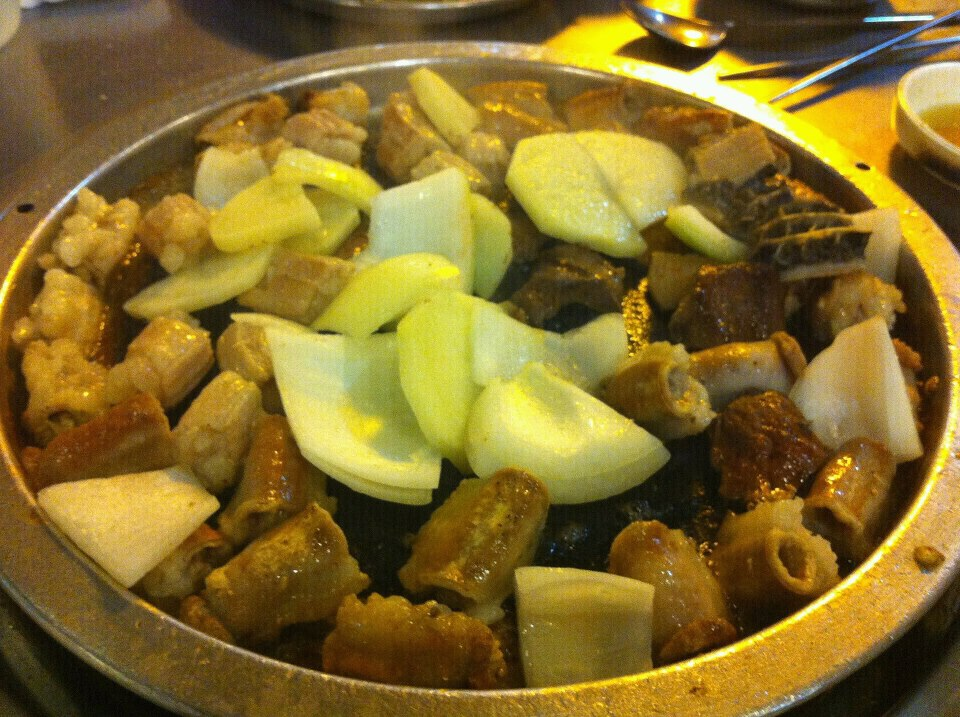
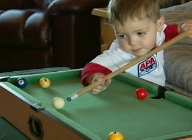
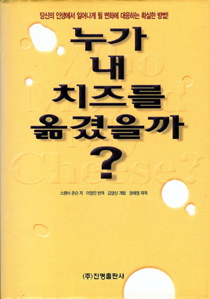

Who am I
Tell me about yourself

I am completed a M.S degree in computer science from Sangmyung Graduation School. During my college days, I was a member of a amateur radio club.
I was deeply interested in cryptography and I researched a digital rights protection technology in prof. choi's lab.
I have learned C, C++, C#, JAVA, PYTHON, HTML5 and else programming languages. Especially, I'm confident and interested in using C++.
I want to have become familiar with the application of tools and software required in computer programming. And, last I want to expand my experience and fresh ideas to the group and be a part of a growing team.
What do you think is the most important quality you should have to be successful in this position?
I think an ideal candidate for this position has to marry three abilities. You have to know the major knowledge. You have to have teamwork skills, and language skills. You must be a fast learner to keep up with ever-changing technology as well.
my family
My mother is housewife. She always buy delicious food for my sister and me. But she does not make food. Just buy. It is more delicious. Her hobby is claiming the mountain.
My sister works for chemistry company. Sometimes I have some problem with her, but she is so nice to me.
my hobby

My hobby is playing billiards. My average is 100. And I want to friend playing billiards with me.
movie

My favorite movie in my life is King and Clown. The King and Clown is very popular movie in Korea. The number of the movie's crowd is over ten million.
At the Joseon Dynasty period, Jangsang a clown is against the nobility. And he is leaving for the Hanyang Joseon's capital with his best friend Gonggil. They participate in a play at Hanyang street. But the play satirized the King of Joseon.
After all, they were arrested. To survive, they participate in a play afront of the King. The King is interested in theirs play. And they stay in the palace. In the palace, they satirized the nobility. And the king killed th nobility.
Jangsang and Gonggil want that they leave the palace. But the king did not a release. Jangsang to reave the palace set against the king. And Jangsang loose his eyes by the King for Gonggil. Jangsang and Gonggil was ready to run the risk of losing everything.
It is very sad story. And King in the movie is a actual Joseon's tyrant.
book

This book is importance of ability well prepared for the change.
This book introduce two mice and two people by master establish. Two mice Snipeu and Skery accept the change, but Two men aren't. They are in the warehouse with a large chunk of cheese. They are satisfied with current condition.
One day two mice suspect that cheese are gradually bad. But two men didn't recognized that face. Eventually, two mice left current place for new cheese. Cheese gradually bad is disappear after all. Two men are embarrassed in that fact. They deny that fact. They believe that cheese will come back. They don't find new cheese.
After few days, one man is recognized the cheese is not here. And the man persuade another man. But another man didn't believe that cheese disappeared. Eventually, the man who recognize the cheese disappeared left for new cheese.
After long time, remained man finally move away from the current place. Whoever recognize the change. Importance is not change but time of change.